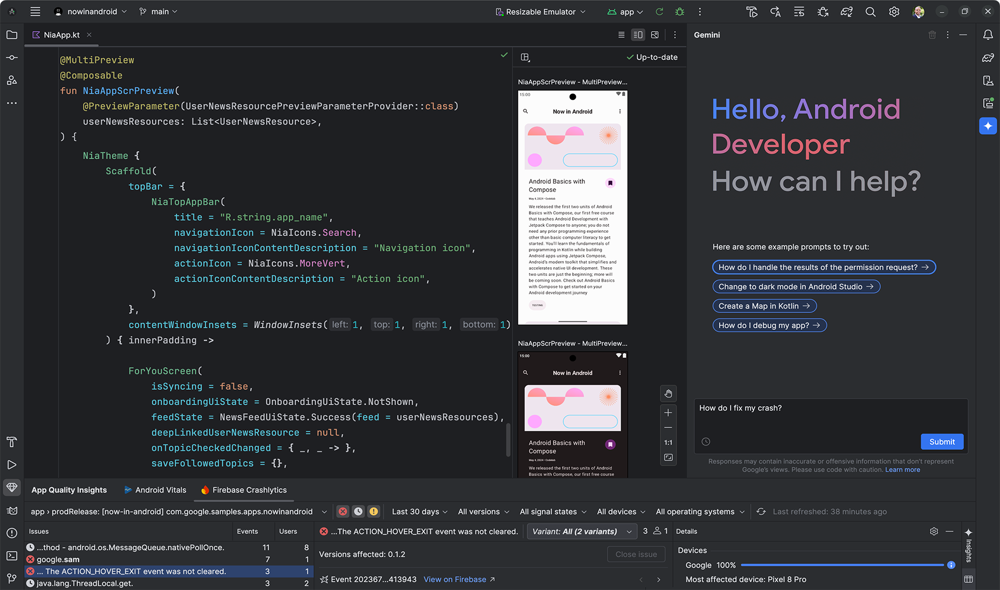
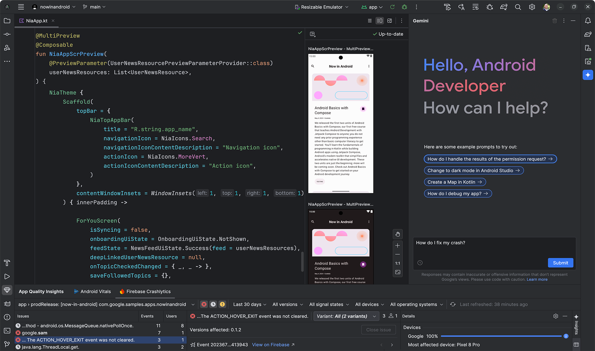

LowerCASE vahendid on tarkvara vahendid mis aitavad spetsiifilisemalt tarkvaraarendusega, projekti teostamisega, debugimiseks
aitavad koodi kirjutada ja muuta.
LowerCASE vahendeid kasutatakse koodi kirjutamiseks, tarkvara debugimiseks, päristoote täiustamiseks, kõik kirjutamine ja tegelemine pärast projekti planeerimist
Jira, Trello, Visual Studio Code, Visual Studio 2022, PyCharm, Thonny, Postman, Chrome DevTools (vist).


NetBeans on nagu Visual Studio aga keelepiirangutega, soovitab koodi, aitab debuggida, peamiselt kasutab javat.
 

Android Studioga saab androidi äppe luua, uuesti nagu Visual Studio. Võiksin üks päev proovida.
allikad: ChatGPT